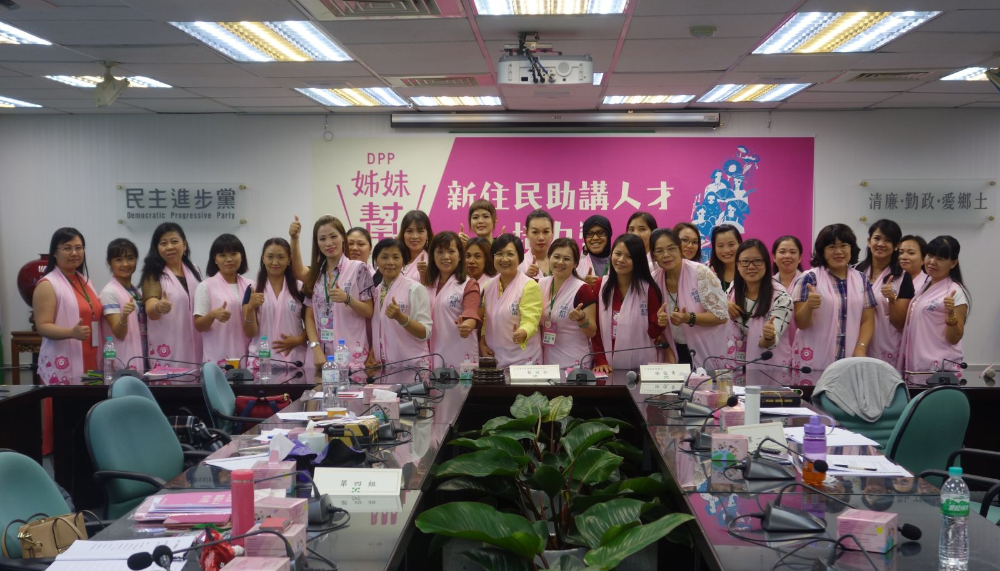

2018-08-04
民進黨成立中央新住民助講團 共同打拼年底選舉勝利
全台新住民人數已突破50萬人，為鼓勵更多新住民姊妹投入公共事務，民進黨婦女部首次邀請新住民姊妹加入中央助講團，並於今(4)日辦理「DPP姊妹幫-新住民助講人才培力營」，邀請徐佳青副秘書長、胡清嫻國策顧問、民主學院林秉忠主任擔任講師，為全國各縣市新住民姊妹進行助講培力。
婦女部蔡宛芬主任於開幕式致詞時表示，很高興有這機會邀請姊妹們一起投入年底選舉的助講工作，為台灣社會注入多元的活力。她也特別於開幕式介紹「DPP姊妹幫」助講團識別物，「DPP姊妹幫」助講團背心首次亮相。背心上面有台灣不同族群女性的圖樣，象徵台灣多元文化的包容性和女性的堅毅；「姊妹幫」字樣則代表姊妹間互相扶持幫忙，也是邀請新住民姊妹一起幫候選人助選之意涵。
第一堂課由民主學院林秉忠主任、國策顧問胡清嫻和姊妹們介紹何謂助講員。林秉忠指出，新住民是我們的夥伴和家人，和我們有共同的未來；姊妹們願意上台助講，就是對候選人最大的支持。而身為台灣首位新住民國策顧問的胡清嫻，也於課中分享她在2016年總統大選前夕，以「2016東南亞小英姊妹會」總會長身份於萬人造勢場的助講經驗，用自身經驗提醒姊妹們上台助講時的注意事項。
第二堂課由徐佳青副秘書長教導學員上台助講的技巧。她說明台灣是個移民社會，不論先來後到，都是台灣的一份子。她也表示政治就是瞭解人的需求是甚麼並提供解決，因此鼓勵學員們講自己的故事，跟大家分享來台灣的真實生活和感受。徐副秘書長指出，姊妹們上台助講，是讓台灣人更認識新住民的一種方式，有了更多的理解，才能避免誤會和歧視。
新住民姊妹們在聽完兩堂課程後輪流上台進行助講的演練，最後所有人穿上「DPP姊妹幫」助講團背心，正式成為中央助講團的一員，一同為民進黨加油，並宣誓共同努力，一起贏得年底選舉的勝利。
